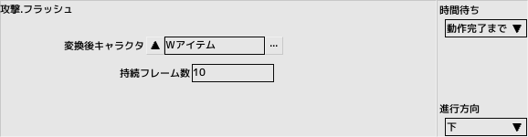

■元のページへ戻る
■元のページへ戻る
ショット
指定されたキャラクタを射出します
- 弾
弾として発射するキャラクタを指定します
- 発射音
キャラクタが発射されるときに再生する効果音を指定します
- 種類
- 通常弾
ターゲットに対して設定された角度で発射されます
- ランダム弾
ターゲットに対して設定された角度内でランダムに発射されます
- ターゲット
- 自機を狙う
自機の方角を０度として計算します
- 進行方向
進行方向を０度として計算します
- 固定方向
画面真下を０度として計算します
- 自分の方向
自分が向いている方向を０度として計算します
- 同時発射数
一回に発射される弾数、一発一発は隙間角度分の角度を持ちます
- 隙間角度
同時発射における一発ごとの角度です。ランダム弾の場合は乱数の範囲です
- 発射間隔
発射と発射の間隔をフレーム単位で指定します
- 発射回数
全部で何回発射するかを指定します
- 角度
ターゲットから角度をつける場合に指定します
- 弾速度
発射する弾の初速を指定します
- 発射位置
発射位置XYをピクセル単位で指定します
- PARAM_A,B
発射したキャラクタに設定されます
- 自分のPARAM_A,Bを渡す
発射したキャラクタに設定されます
同時に複数のショットパネルを実行することはできません。全タスクで1つです
複数の攻撃を同時に行いたい場合は弾幕を使用してください
弾幕
弾幕編集で作成した弾幕を再生します
- 弾幕
再生する弾幕を指定します
- 弾
弾として発射するキャラクタを指定します
- 発射音
弾が発射されるときに再生する効果音を指定します
- 発射位置
発射位置をピクセル単位で指定します
- PARAM_A,B
発射したキャラクタに設定されます
同時に複数の弾幕パネルを実行できます
子生成
親子関係を持った子キャラクタを生成します
親キャラクタが消滅した場合、子も自動的に消滅します
- キャラクタ
子として生成するキャラクタを指定します
- 生成位置
- 直交座標で配置
- XY
子の位置をXYで親からのオフセットで指定します
- 極座標で配置
- 角度
子の位置を角度で指定します
- 角度の基準
角度が0度となる向き
- 距離
子の位置を親からの距離で指定します
- 子ID
何番目の子とするかを指定します（0～15）
- 子描画優先
親や他の子に対しての優先順位を指定します
- 配置後の向き
子がどっちを向くかを指定します
- オフセット角度
子の向きにオフセットを付けます
- PARAM_A,B
生成した子キャラクタに設定されます
- 自分のPARAM_A,Bを渡す
生成した子キャラクタに設定されます
同じ子IDのキャラクタを複数生成すると、親から以前の子へのリンクは切れてしまいます

フラッシュ
画面の特定のキャラクタを別のキャラクタへ変換します
対象となるキャラクタはキャラクタ編集のアトリビュートフラグ「フラッシュに反応する」で指定します
- 変換後キャラクタ
主にアイテムを指定します
- 持続時間
指定したフレーム数だけフラッシュ効果が持続します
編隊
編隊編集で作成した編隊を射出します
- 編隊
射出する編隊を指定します
- ボーナスアイテム
全滅時に出現させるアイテムを指定します
- XY
発射位置をピクセル単位で指定します
- PARAM_A,B
編隊内のキャラクタに設定されます
- 時間待ちを動作完了にした場合
- 全てのキャラクタが出現し終えるまでウエイト
画面内に出たかどうかは関係ありません
- 全てのキャラクタが消滅するまでウエイト
破壊、消滅全てが対象です
親子関係
親子関係を操作します
- 操作モード
- 親から自分を解除する
- 子を自分から解除する (子IDを指定、もしくは全て)
- 座標・回転・拡大率を親に同期しないフラグをONにする(保存)
位置関係を保持したままフラグを保存後、全てONにします
- 保存したフラグを復帰する
位置関係をを保持したままフラグを復帰させます
- 子を削除する (子IDを指定、もしくは全て)
- 親子関係解除時のオプション
- 位置等を維持した状態で解除する
解除時の位置、回転、拡大率、色を保持します
- 親子関係のみ解除する
関係のみを解除するため、親に同期してた項目は考慮されません
■ページ上部へ戻る